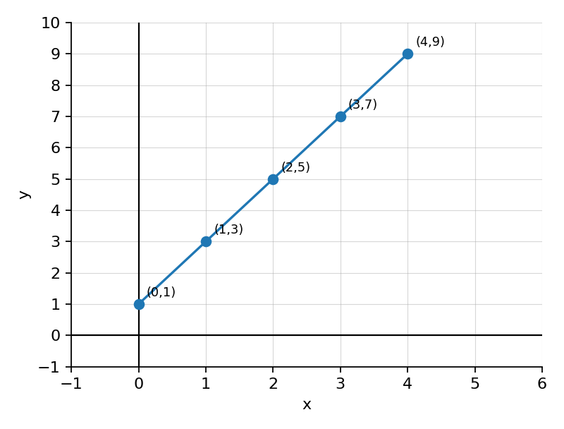
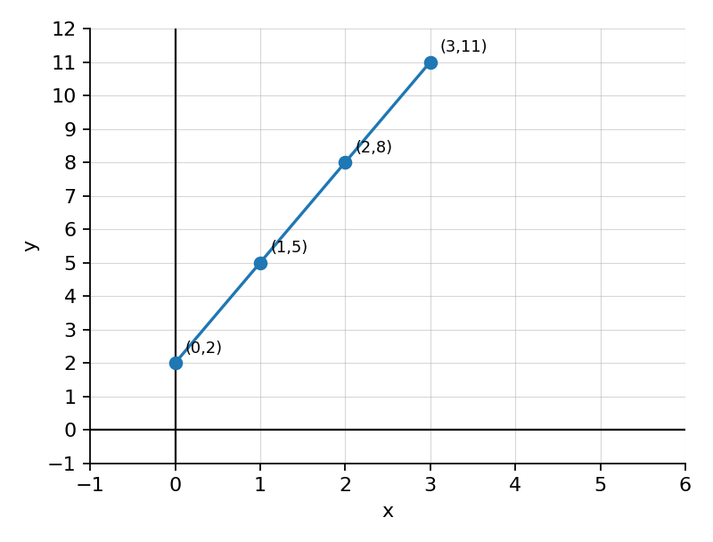
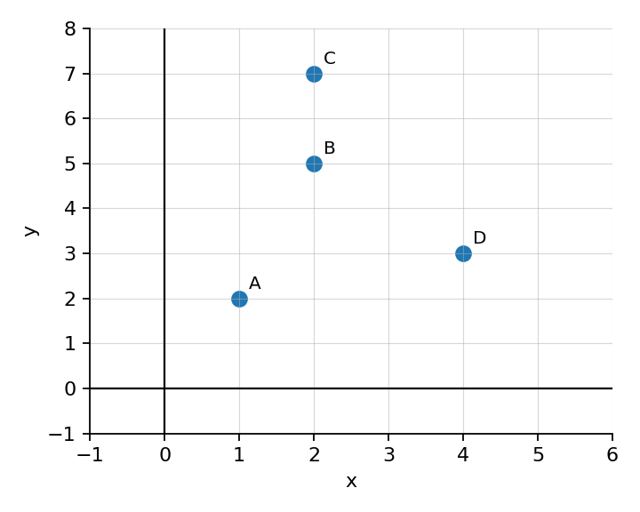
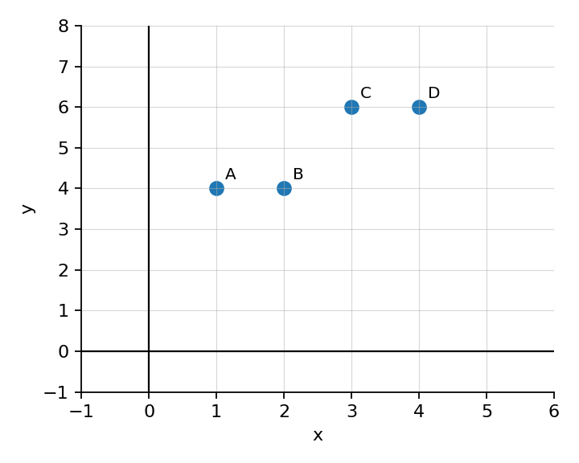
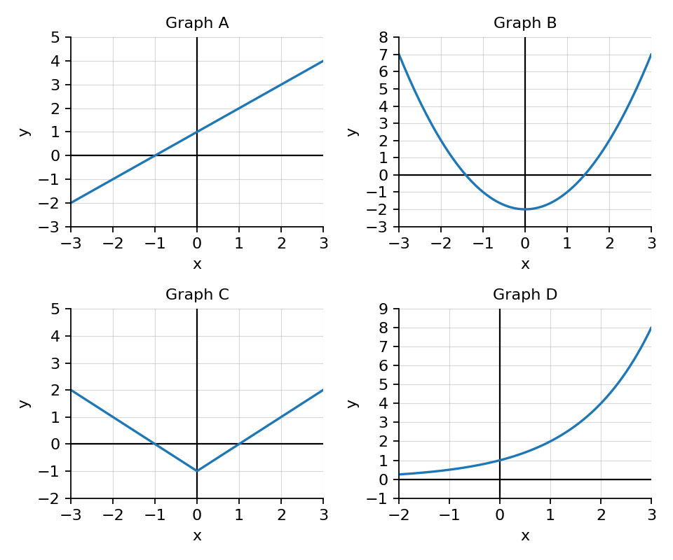
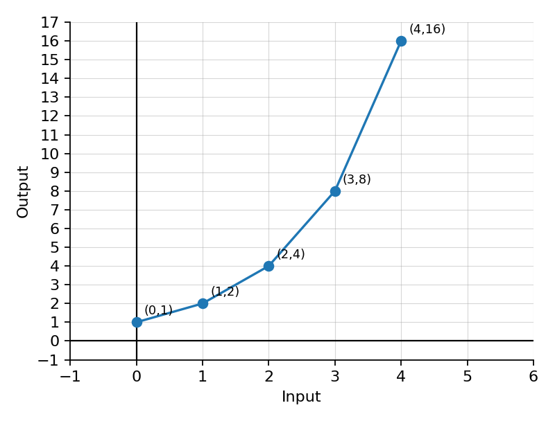
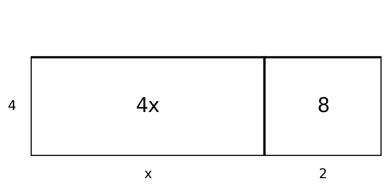
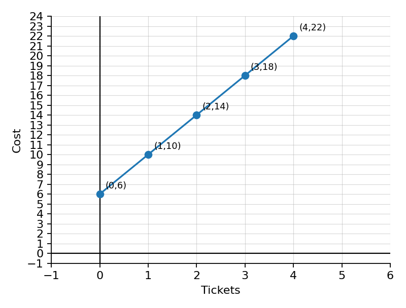
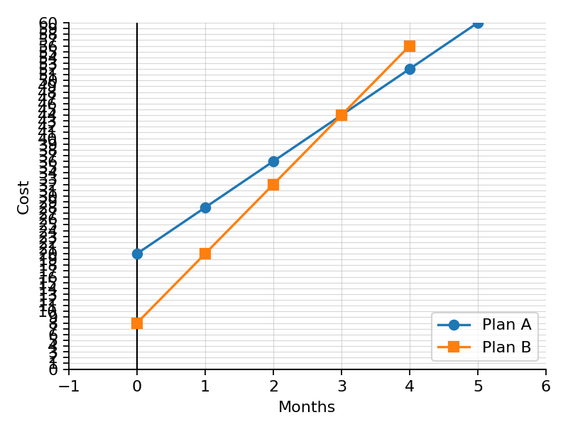

Warm Up Unit 1.1.1
Prior Knowledge for Multiple Representations
Problem 1
Use the table to write the ordered pairs.
Problem 2
For $y=3x+1$, find $y$ when $x=0$, $x=2$, and $x=5$.
Problem 3
A snack costs $2$ dollars each. Write a sentence describing how total cost changes as the number of snacks increases.
Problem 4
Decide whether the rule $y=x+5$ matches the table below. Explain briefly.
Warm Up Unit 1.1.2
Current + Spiral Practice
Problem 1

Use the graph to list four ordered pairs.
Problem 2
Determine whether $y=2x+1$ matches the graph above. Show evidence.
Problem 3
Spiral: Solve and graph the inequality $x+4\le 9$ on a number line.
Problem 4
Formative Spiral: Evaluate $-6+3(4)-2$.
Warm Up Unit 1.1.3
Reasoning with Representations
Problem 1

A student says this graph matches the table below. Do you agree? Justify.
Problem 2
Create a context that could match $y=4x+3$. Explain what $x$, $y$, $4$, and $3$ could mean.
Problem 3
Spiral: A pattern starts at $5$ and grows by $3$ each step. Explain how you know it is linear and predict Step $10$.
Problem 4
Formative Spiral: A student claims $3(x+4)=3x+4$. Critique the work and correct it.
Warm Up Unit 1.2.1
Prior Knowledge for Inputs, Outputs, and Functions
Problem 1
In the ordered pair $(4,9)$, identify the input and the output.
Problem 2
Complete the table for the rule “multiply the input by $3$ and subtract $1$.”
Problem 3
For $y=x+7$, find the output when the input is $8$.
Problem 4
Explain in one sentence what it means for each input to have exactly one output.
Warm Up Unit 1.2.2
Current + Spiral Practice
Problem 1
For $f(x)=2x-5$, find $f(0)$, $f(3)$, and $f(7)$.
Problem 2
The rule for a rewards program is $P=10m+25$, where $m$ is the number of months. Find $P$ when $m=6$ and explain the meaning of the output.
Problem 3

Spiral: Is this relation a function? Explain using inputs and outputs.
Problem 4
Formative Spiral: Solve $4x-7=21$ and verify the solution.
Warm Up Unit 1.2.3
Reasoning with Functions
Problem 1

Explain why this relation can still be a function even though some outputs repeat.
Problem 2
Design a relation that is not a function. Explain exactly what feature makes it fail.
Problem 3
Spiral: Compare $y=3x+2$ and $y=x+10$. For what input do they have the same output? Explain how you found it.
Problem 4
Formative Spiral: A student says the solution to $2x+5=17$ is $x=11$. Identify the error and solve correctly.
Warm Up Unit 1.3.1
Prior Knowledge for Function Families
Problem 1
Classify each equation as linear or not linear: $y=4x-1$, $y=x^2+3$, $y=2x$, $y=3^x$.
Problem 2
A graph is a straight line. What function family does it most likely represent?
Problem 3
Complete the table for $y=x^2$.
Problem 4
Describe one visible difference between a straight-line graph and a U-shaped graph.
Warm Up Unit 1.3.2
Current + Spiral Practice
Problem 1

Match Graphs A-D to linear, quadratic, absolute value, and exponential.
Problem 2
Classify each equation: $y=5x+2$, $y=x^2-9$, $y=|x|+1$, $y=2^x$.
Problem 3
Spiral: Complete the table for $y=2x+3$.
Problem 4
Formative Spiral: Simplify $6a-2+3a+7$.
Warm Up Unit 1.3.3
Reasoning with Function Families
Problem 1
A student says $y=x^2+4$ is linear because the table has numbers that keep increasing. Critique the statement using a small table.
Problem 2

Use the graph to argue whether the relationship appears linear or exponential. Cite evidence from the graph.
Problem 3
Spiral: Use the table to explain how you know the relationship is linear, then write a rule.
Problem 4
Formative Spiral: Create two equivalent expressions for $5(x+2)+3x$ and explain why they match.
Warm Up Unit 1.4.1
Prior Knowledge for Expressions and Structure
Problem 1
Identify the coefficient, variable term, and constant term in $8x-3$.
Problem 2
Combine like terms: $7m+4-2m+9$.
Problem 3
Use the distributive property to rewrite $3(x+6)$.
Problem 4
Determine whether $4(x+2)$ and $4x+2$ are equivalent. Explain briefly.
Warm Up Unit 1.4.2
Current + Spiral Practice
Problem 1
Simplify $5x+8+2x-3$. Identify which terms you combined.
Problem 2

Write an expression represented by the area model, then factor the expression.
Problem 3
Spiral: Classify $y=x^2-6$ by function family and name one feature of its graph.
Problem 4
Formative Spiral: Evaluate $2a^2-3b$ when $a=4$ and $b=-2$.
Warm Up Unit 1.4.3
Reasoning with Expression Structure
Problem 1
Two students simplify $4(x+3)+2x$. Student A distributes first. Student B combines after rewriting. Show both methods and compare them.
Problem 2
Explain why $9x+6$ can be written as $3(3x+2)$. What structure did you notice?
Problem 3
Spiral: A student classifies $y=2^x$ as linear because it increases. Critique the reasoning.
Problem 4
Formative Spiral: A student solves $3(x+2)=18$ by writing $3x+2=18$. Identify and correct the error.
Warm Up Unit 1.5.1
Prior Knowledge for Equations as Models
Problem 1
Solve $3x+4=22$.
Problem 2
Write an equation for: “Seven more than twice a number is $31$.”
Problem 3
A gym charges $15$ per month plus a $20$ joining fee. Write an expression for the cost after $m$ months.
Problem 4
Check whether $x=6$ is a solution to $5x-4=26$.
Warm Up Unit 1.5.2
Current + Spiral Practice
Problem 1

Use the graph to write an equation for total cost $C$ in terms of tickets $t$.
Problem 2
A streaming plan charges a $12$ start fee and $8$ per month. Write and solve an equation to find how many months cost $60$ total.
Problem 3
Spiral: Evaluate $h(x)=x^2+2$ for $x=-3$ and $x=5$.
Problem 4
Formative Spiral: Solve and graph $2x\ge 14$ on a number line.
Warm Up Unit 1.5.3
Reasoning with Equation Models
Problem 1
A student models “$6$ dollars per ticket plus a $10$ fee” with $C=10t+6$. Critique the model and write a corrected equation.
Problem 2

Use the graph to compare Plan A and Plan B. When do they cost the same, and what does that point mean?
Problem 3
Spiral: Create a table and context for $y=3x+4$, then explain how the table shows the rate of change and starting value.
Problem 4
Formative Spiral: A student claims $x<5$ and $x\le 5$ have the same graph. Explain the difference and why it matters.